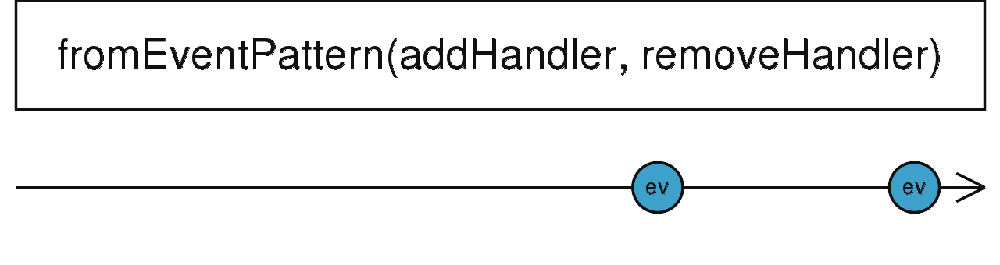

fromEventPattern
参数列表：
-
addHandler
function(handler: Function): any
1个以Handler为参数的函数，该函数负责向事件源订阅事件。该函数在Observable被subscribe的时候调用。这个handler被调用的时候,会向外部输出值，相当于调用Observable.next
-
removeHandler
function(handler: Function, signal?: any): void
1个以Handler为参数的函数，该函数负责向事件源取消订阅事件。该函数在Observable被unsubscribe的时候调用
-
selector
function(...args: any): T>
处理函数，对event参数做处理，返回单个值
返回值: Observable<T>
珠宝图:

功能说明:
- fromEventPattern 对符合该模式的对象进行监听，并把事件参数作为输出emit出去
备注事项:
点击不同按钮查看不同demo 代码效果